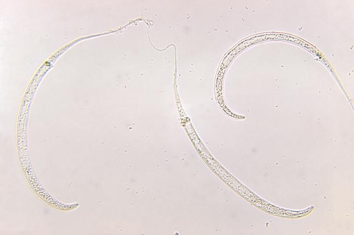
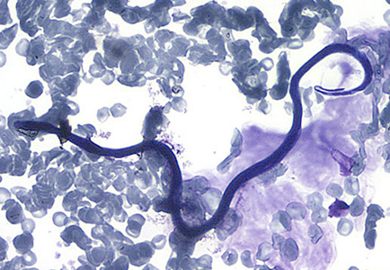

Extraordinary worms. Very different risks.
Guinea worm is now very rare in humans. Loa loa is uncommon in the U.S., but can be common in affected regions of Africa.
Guinea worm: a year-long delay
People usually acquire Dracunculus medinensis by drinking water containing infected tiny crustaceans called copepods. About a year later, a long female worm emerges through a painful skin blister. Water contact triggers release of larvae. This life cycle makes clean drinking water and preventing contamination powerful tools.
An eradication story without a vaccine
There is no drug that kills Guinea worm infection and no vaccine. Care includes careful removal of the emerging worm, wound care, and pain control. Filters, safe water, surveillance, and community prevention have dramatically reduced human cases. Animal infections still complicate eradication.

CDC / Dr. Mae Melvin, PHIL 10923 (1973) · Public domain
Loa loa: the “African eye worm”
Transmitted by infected deerflies in parts of West and Central Africa, this worm can cause temporary swellings and sometimes pass beneath the conjunctiva—the clear covering of the eye. Many infected people have no symptoms. It is not something acquired by ordinary contact with another person.
At the laboratory bench
Loa loa microfilariae can be detected and counted in blood. Collection timing matters because they are typically more abundant in peripheral blood during the daytime. Identifying the species and measuring the burden can directly affect treatment safety.

CDC / DPDx · Public domain
Why identification comes before treatment
Loiasis needs specialist management. Some antiparasitic medicines can cause severe complications in people with high microfilarial counts. “Give a dewormer” is not a safe universal answer.
Sources & further exploration
Educational content reviewed October 4, 2026. Photographs show real specimens or research observations; stains and imaging methods affect their appearance. CDC images are available free from CDC. Their use does not imply endorsement by CDC, HHS, or the U.S. Government.